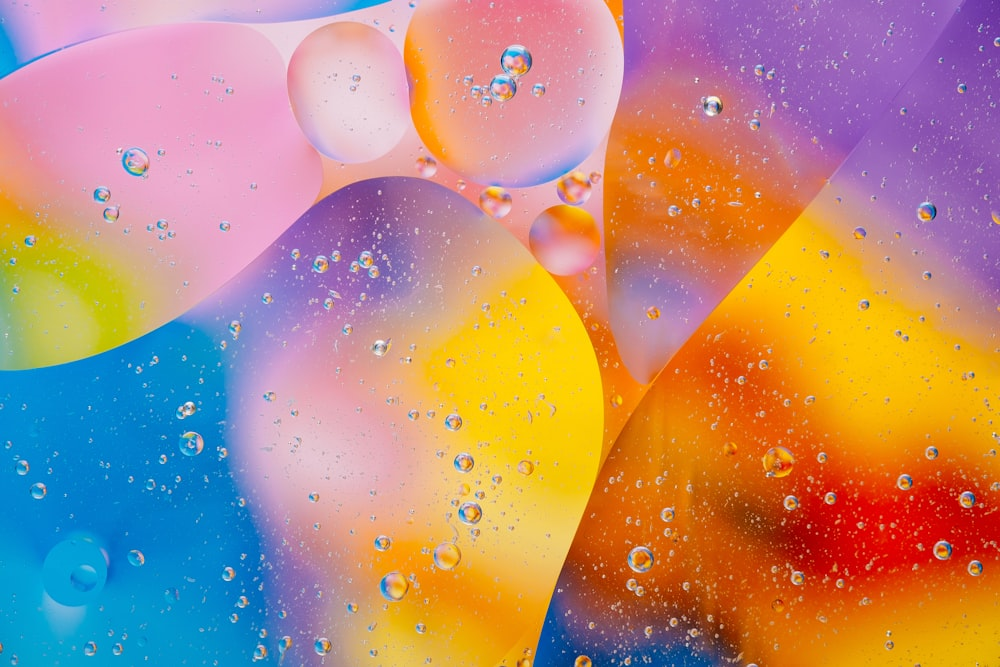

SHOT.IS
FAST HOOK // 10S
STOP RENTING FACES.
Own the creator. Own the output.
AI CHARACTER SYSTEM
CAMPAIGNS BUILT TO SPREAD.
 VEXA-9
VEXA-9
KAI_OS LUNA_CORE
LUNA_COREPROOF IN THE FEED
847M+
TOTAL REACH
340%
ROI INCREASE VS. TRADITIONAL CREATORS
SHOT.IS
THE SHOT IS VIRAL.
Apply for whitelist access before the next feed cycle moves.
SHOT.IS